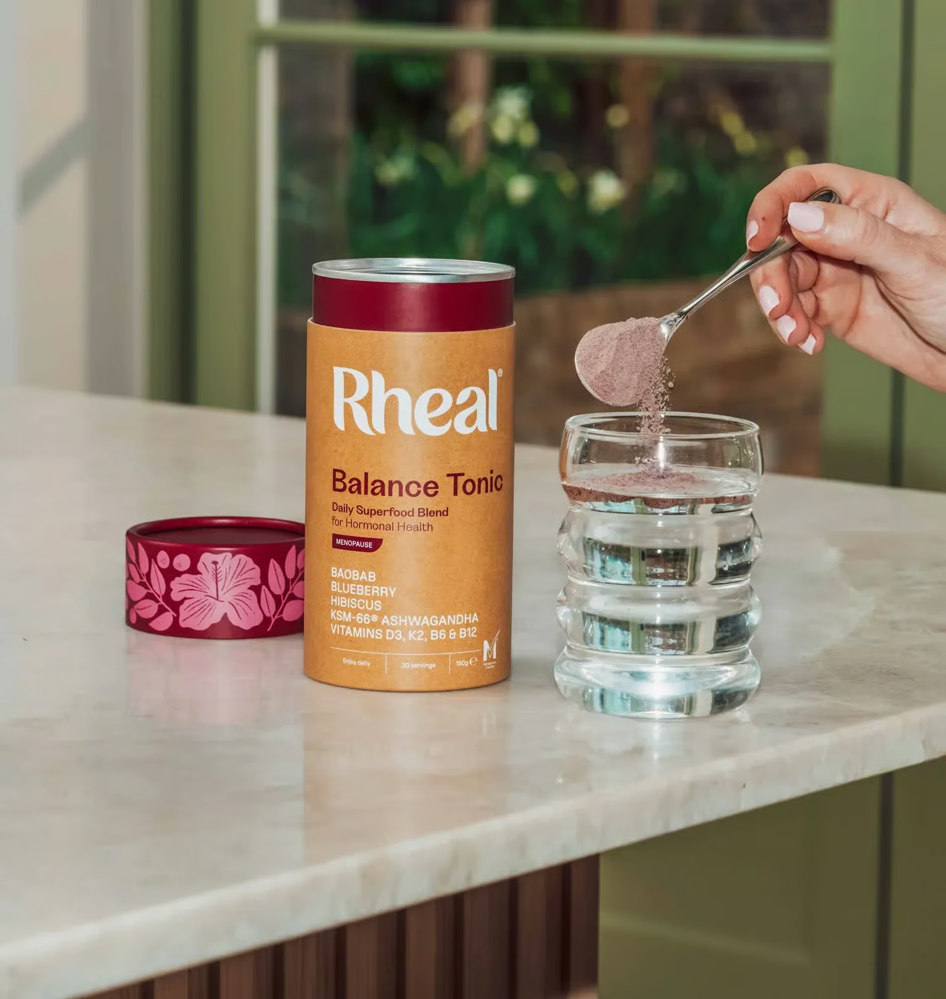
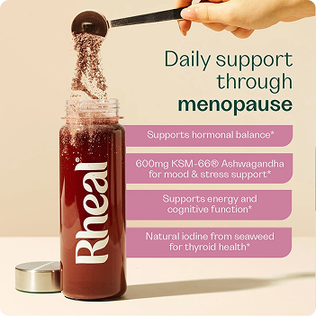
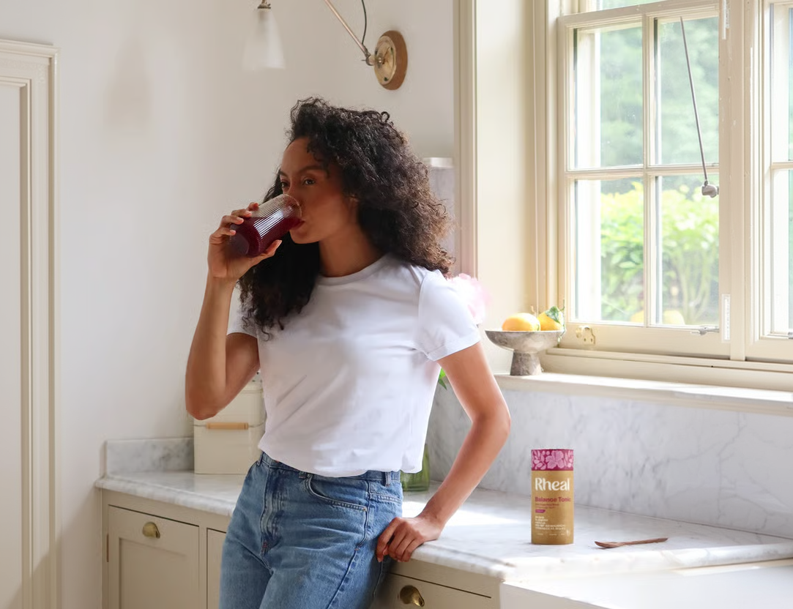

The Menopause Diaries
Nobody told me what perimenopause does to your stress hormones.
- 3AM waking
- Tired but wired
- Afternoon crash
“I was exhausted all day and wide awake at 3am, heart going, mind racing. Flat by afternoon, running on coffee, braced for nothing in particular. It took me two years to work out why.”

01. The nights
My nights were restless. My days were running on empty.
For about two years I woke up at the same time every night. Somewhere between 3 and 3.30. Not gently — properly awake, heart going, brain already halfway through a list of things I hadn’t done. Then I’d lie there until about 5, fall asleep, and the alarm would go off at 6:30.
The days were the other half of it. Flat by mid-afternoon, running on coffee, and underneath everything a low hum of anxiety that never quite switched off. Not anxious about anything in particular. Just braced. I’d sleep eight hours at the weekend and wake up feeling exactly the same, which is when I started to think something was actually wrong.
“I know what stress feels like. This wasn’t that”
I went to the GP twice. Both times I came out with the word “stress” and the suggestion that I try to wind down in the evenings. I’m 51. I run a department and two teenagers. I know what stress feels like. This wasn’t that.
02. The explanation
There was a missing piece to the story.
What actually changed things for me wasn’t a diagnosis. It was a nutritionist on a podcast explaining what Oestrogen does that nobody had ever told me. Oestrogen doesn’t just handle periods and hot flushes — it’s part of how your body keeps its stress response in check. As it starts fluctuating and dropping in your forties and fifties, that regulation gets less reliable. Cortisol — the stress hormone — has less holding it steady.
The problem is when it stops following the pattern it’s meant to follow.
And cortisol isn’t the villain. You need it; it’s what gets you out of bed. Sitting high when it should be tapering off at night — that’s your 3am. Depleted and running on empty by the afternoon — that’s the wall. Wired and exhausted at the same time isn’t a contradiction. It’s what a dysregulated stress response actually feels like.
I’m not a doctor and I’m not telling anyone what’s happening in their body — if this sounds like you, take it to your GP. But it was the first explanation I’d heard that accounted for all of it at once, instead of treating my sleep, my mood and my energy as three separate failures of willpower.
03. Finding Rheal
A formula that felt transparent, with the doses right up front.
Once I understood the connection I went looking for something to support the stress side rather than just knock me out at night. I’d tried magnesium. I’d tried a sleep spray. I’ve got a cupboard of half-used pots to show for it
Balance Tonic - Menopause came up because of ashwagandha — an adaptogen that keeps coming up in the perimenopause conversation. What made me actually order it was that Rheal put the dose on the front. It’s also certified menopause-friendly by Gen M — the MTick.
600mg of KSM-66® Ashwagandha, which is the amount used in the human clinical trials on it, not a sprinkle for the label. That mattered to me, because underdosing is exactly why half the things in my cupboard did nothing.

Why I choose Balance Tonic
- Vitamin B6, B12
- Tiredness & Fatigue
- Iodine
- PureSea® Scottish Seaweed
- D3 + K2
- For Normal Bones
“It’s one scoop in water, not four more pills to forget.”
04. What happened next
Results compounded over 90 days, not fortnight
I want to say that plainly, I nearly stopped but around week four, I noticed I was still waking at 3am but could actually fall back asleep. It was a small, but real, difference.
- Week 4
Back to sleep
Still waking at 3, but going back to sleep.
- Week 6
Quieter afternoons
I stopped needing the 3pm coffee.
- Month 5
Still taking it
I haven’t stopped.

It hasn’t fixed everything. I still get bad weeks, usually the busy ones. I still wake up some nights. I’ve changed other things at the same time — I walk in the mornings now and I’ve cut the second glass of wine — so I can’t put all of it down to one tin. But I’ve been taking it for five months and I haven’t stopped, which for me is the honest measure. This is just what happened for me, not a promise about what happens for anyone else.
If any of that sounded familiar...
— the 3am, the tired-but-wired, the being told it’s stress when you know it isn’t — it’s at least worth knowing the connection exists. Read up on it. Take it to your GP if you want to. And if you want to see what’s actually in the tin, the ingredients and doses are all listed on their site.
Rated 4.4/5 on TrustpilotOver 2M+ Customers
I’m not saying it’ll do the same for everyone. But I wish someone had told me two years earlier.